ภาพของรูปเรขาคณิตสามมิติ
1.รูปเรขาคณิต (geometric figure) เป็นรูปที่ประกอบด้วย จุด เส้นตรง เส้นโค้ง ระนาบ ฯลฯ อย่างน้อยหนึ่งอย่าง
รูปเรขาคณิตสองมิติ (Two – dimensional geometric figure) แบ่งออกเป็น 2 กลุ่มใหญ่ๆ ได้แก่
กลุ่มที่ 1 กลุ่มที่มีขอบหรือด้านของรูปเป็นส่วนของเส้นตรง ที่นักเรียนควรรู้จัก มีดังนี้
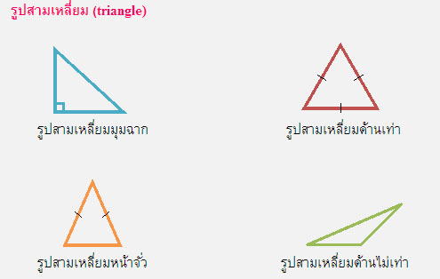กลุ่มที่ 2 กลุ่มที่มีขอบหรือด้านของรูปเป็นส่วนโค้ง
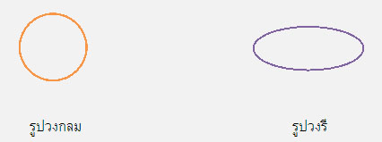รูปเรขาคณิตสามมิติ ( Three – dimensional geometric figure) ที่นักเรียนควรรู้จัก มีดังนี้
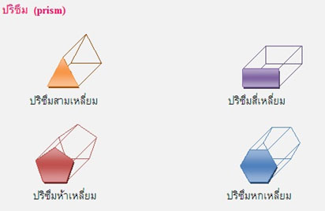ความสัมพันธ์ระหว่างรูปเรขาคณิตสองมิติและสามมิติ
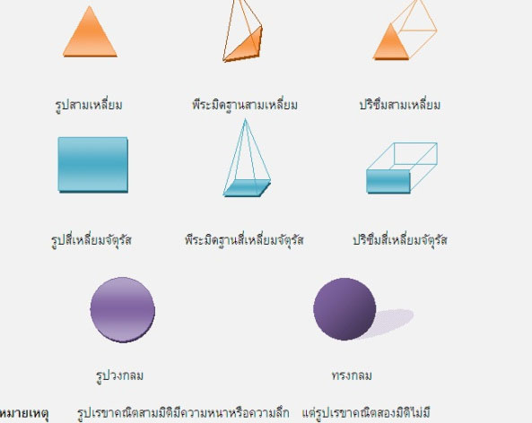2. รูปคลี่ของของรูปเรขาคณิตสามมิติ
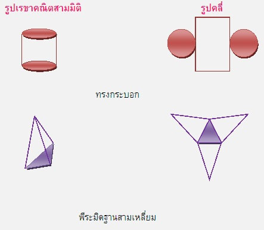หน้าตัดของรูปเรขาคณิตสามมิติ
หน้าตัด (section) หรือ ภาพตัดบนระนาบ เกิดจากการใช้ระนาบตัดรูปเรขาคณิตสามมิติ โดยรูปที่ได้จากการตัดจะเป็นรูปเรขาคณิตชนิดใด ขึ้นอยู่กับแนวการตัดและชนิดของรูปเรขาคณิตสามมิตินั้น
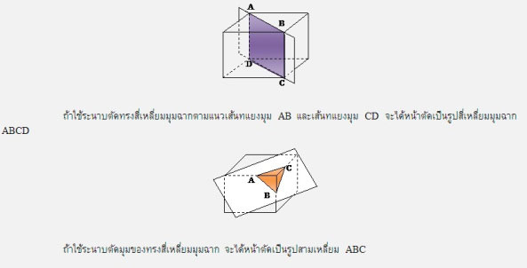ภาพที่ได้จากการมองทางด้านหน้า ด้านข้าง และด้านบน ของรูปเรขาคณิตสามมิติ
ภาพที่ได้จากการมองทางด้านหน้า ด้านข้าง และด้านบน ของรูปเรขาคณิต
สามมิติ ได้จากการเขียนภาพที่ได้จากการมองรูปเรขาคณิตจากด้านต่างๆ ในแนวตั้งฉากกับด้านที่มองเห็นใช้เส้นทึบแสดงเฉพาะขอบที่มองเห็น
พิจารณารูปเราคณิตสามมิติที่กำหนดให้ต่อไปนี้
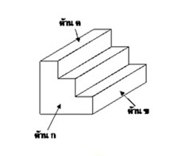ภาพที่ได้จากการมองรูปเรขาคณิตสามมิติทางด้านหน้า (front view) สามารถเขียนภาพได้ดังนี้
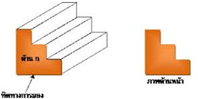ภาพที่ได้จากการมองรูปเรขาคณิตสามมิติทางด้านข้าง (side view) สามารถเขียนภาพได้ดังนี้
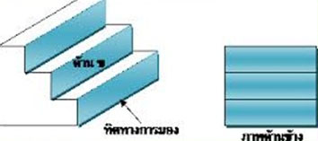ภาพที่ได้จากการมองรูปเรขาคณิตสามมิติทางด้านบน (top view) สามารถเขียนภาพได้ดังนี้
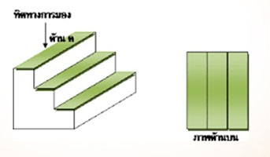รูปเรขาคณิตที่ประกอบขึ้นจากลูกบาศก์
ตัวอย่างการเขียนภาพรูปเรขาคณิตที่ประกอบขึ้นจากลูกบาศก์ทางด้านหน้า (front view) ด้านข้าง (side view) และด้านบน (top view)
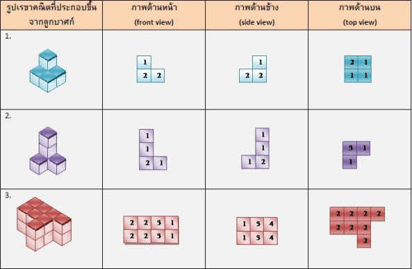